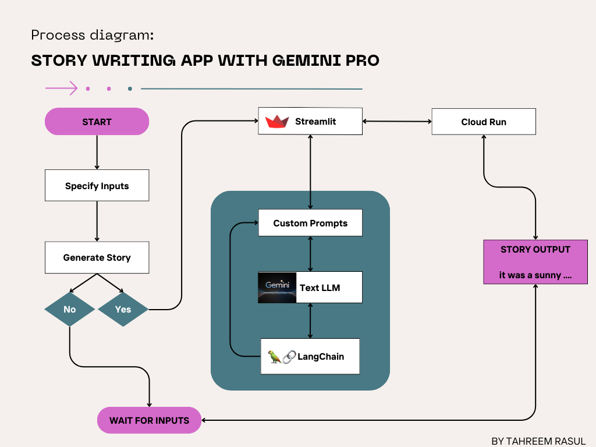

Introduction
In this workshop, we will learn how to setup Google's Gemini Pro text model to build generative AI applications. This particular tutorial will focus on creating a story writing application using the Gemini Pro model. We will use the LangChain framework to load our Gemini Pro text model, add prompts and make calls to the model. LangChain offers great abstraction, allowing us to work with a wide variety of tools and language models, and takes care to development under the hood. We will also explore an alternative method in which models can be loaded directly from Google's Vertex AI.
Next, we will create a web application using Streamlit. Streamlit is a Python library that simplifies building web apps for machine learning projects. It offers a straightforward way to create interactive UIs. We will be discussing how to get user data from our streamlit web app, and linking it to our Gemini Pro model. Streamlit offers different interactive elements to enhance your application, and get user input. We will also be discussing how we can deploy our application locally.
Finally, we will discuss how we can deploy our story writing application to Google Cloud Run using a docker container. This will then allow your application to go online, and you can share it with other people.
App Specifics
We will be building an application that writes a story based on specific information provided by a user. This information includes story length, character names, their personas, the story genre, where it is set etc. We will also encode other information into our prompt to control the level of creativity in the story generation process.

Here's what you'll learn
- Setting up Cloud Run
- Configuring Gemini API Key
- LangChain's functionality for Gemini Models
- Building web applications using Streamlit
- Deploying applications on Google Cloud Run
Here's what you need
- Python 3.10 or above
- Google Account
- Google API Key
The environment setup for this project comprises of a few key steps. These are detailed below.
Create a Google Cloud project
A Google Cloud project organizes all your Google Cloud resources. It consists of a set of collaborators, enabled APIs (and other resources), monitoring tools, billing information, and authentication and access controls. When you create a new project, you will need to enter a Project Name, and you will have to link it to an existing Billing Account and Organization.
- Sign-in to the Google Cloud Console and create a new project or reuse an existing one. If you don't already have a Gmail or Google Workspace account, you must create one.
- The Project Name is the display name for this project's participants. It is a character string not used by Google APIs. You can always update it.
- The Project ID is unique across all Google Cloud projects and is immutable (cannot be changed after it has been set). The Cloud Console auto-generates a unique string; usually you don't care what it is.
- Next, you'll need to enable billing in the Cloud Console to use Cloud resources/APIs. Running through this codelab won't cost much, if anything at all. To shut down resources to avoid incurring billing beyond this tutorial, you can delete the resources you created or delete the project. New Google Cloud users are eligible for the $300 USD Free Trial program.
Obtain Gemini API Key
In order to build an application with Gemini Pro, you need to acquire an API key. This can be done with the Google MakerSuite.
- In the top left of the page you should see a Get API Key button. Click it.
- Now click Create API Key in new project. Copy the API key and store in a safe place.

- In your project folder, create a
.envfile and add your API Key as follows:
GOOGLE_API_KEY="new_api_key_here"
Conda/Python venv Setup
To start building our application, we need to install all the dependencies and libraries in a dedicated Python environment.
Option 1: Conda Environment
If you have anaconda installed in your system, you can create a conda environment through the following steps:
- In a new command line terminal, create a conda environment as follows:
conda create -n story_writing_app python=3.10
- Activate your environment:
conda activate story_writing_app
- Install all dependencies:
pip install langchain python-dotenv streamlit google-generativeai langchain-google-genai
Option 2: Python Virtual Environment
In case you do not have anaconda installed in your system, you can create a virtual Python environment by following these steps:
- In a new command line terminal, create a virtual env as follows:
python3 -m venv story_writing_app
- Activate your environment:
source story_writing_app/bin/activate
- Install all dependencies:
pip install langchain python-dotenv streamlit google-generativeai langchain-google-genai
To build a custom generative AI application, we typically need to define an instance of a large language model. In our case, this would be the Gemini Pro Text model. This model instance needs to be connected with a custom prompt, memory features to maintain context, callbacks for logging etc. LangChain is a Python framework that abstracts a lot of these processes and makes generative AI development easier. We can also directly load the model through Google's Vertex AI API. However, for the scope of this tutorial, we will be focusing on using LangChain for all our LLM related development.
Understanding LangChain
LangChain is an open-source Python framework designed to streamline the integration of large language models (LLMs) into application development. By abstracting the complexities associated with different LLMs, LangChain allows developers to switch between models, promoting modularity and flexibility in application design. Some core features offered by LangChain:
- Model Abstraction: LangChain abstracts the details of different language models, allowing developers to switch between models with minimal code changes.
- Chain-Based Composition: It introduces the concept of chains, which are sequences of operations or transformations applied to text. This allows for modular design, where components like prompt engineering, response processing, and state management can be easily assembled and reused.
- Prompt Engineering Support: LangChain provides tools for sophisticated prompt engineering, enabling developers to craft prompts that gather more accurate and contextually relevant responses from language models.
- Agents and Tools: LangChain allows developers to integrate a large variety of tools for different tasks. An example of a tool is the online search tool provided by Wikipedia.

LangChain's PromptTemplate
The PromptTemplate can be thought of as a wrapper around prompts, where you can specify the input variable, as well as any other key information. The prompt typically needs to be in a specific format for use inside LangChain. Let's begin by creating a prompt for our application.
- Create a new python script in your directory and name it
prompts.py. - Import the
PromptTemplatemodule from LangChain:
from langchain.prompts import PromptTemplate
- Now, we will write a template for our story writing application. We will include any data we expect from the user inside curly braces, and specify all instructions for our large language model:
story_template = """Write a {length_of_story} story based on the following premise: \n
character_name: {character_name} \n
character_type: {character_type} \n
character_persona: {character_persona} \n
character_location: {character_location} \n
story_premise: {story_premise} \n
If the story is "short", then make sure to have 5 chapters or else if it is "long" then 10 chapters.
Important point is that each chapters should be generated based on the premise given above.
First start by giving the book introduction, chapter introductions and then each chapter. It should also have a
proper ending.
The book should have prologue and epilogue.
"""
- Next, we would need to add this to LangChain's
PromptTemplate, that we imported previously. We also need to specify any input variables that our prompt is expecting:
story_prompt = PromptTemplate(
input_variables=["length_of_story", "character_name", "character_type", "character_persona", "character_location",
"story_premise"],
template=story_template
)
- Finally, let's define a dictionary to store all user inputs. This would be required when we are making calls to our language model, and would ensure that correct values are passed against each input:
prompt_formatted = {
"length_of_story": length_of_story,
"character_name": character_name,
"character_type": character_type,
"character_persona": character_persona,
"character_location": character_location,
"story_premise": story_premise
}
Defining Gemini Pro Text Instance
We can create an instance of the Gemini Pro Text model with the google-generativeai and langchain-google-genai libraries that we installed in the beginning.
- Create a new python script named
app.pyand import the necessary modules:
from langchain_google_genai import ChatGoogleGenerativeAI
- Define an instance of the Gemini Pro Text model. For now, we can hard code some inputs, but we will customize these based on user input:
temperature=0.3
max_output_tokens=2048
llm = ChatGoogleGenerativeAI(model="gemini-pro",
temperature=temperature,
max_output_tokens=max_output_tokens)
LangChain's LLMChain
Chains are sequences of calls that help in interacting with language models more effectively. Chains in LangChain are designed to encode a sequence of calls to models, document retrievers, and other chains, providing a simplified interface. This makes working with language models easier and more versatile, especially when dealing with complex tasks. We'll be using the LLMChain which is a simple sequential chain for interacting with language models.
- Create a new python script named
app.pyand import the necessary modules:
from langchain.chains import LLMChain
from prompts import story_prompt, prompt_formatted
- Create a chain by specifying the language model, and the prompt that the model is expecting. We defined both of these previously:
chain = LLMChain(llm=llm, prompt=story_prompt, verbose=True)
- The model can be called using the
invokemethod from the chain:
response = chain.invoke(prompt_formatted)
Code Restructure
In your app.py script, add all import statements in the beginning:
from langchain_google_genai import ChatGoogleGenerativeAI
from langchain.chains import LLMChain
from langchain.prompts import PromptTemplate
from dotenv import load_dotenv
load_dotenv()
We can create a function and add the code we defined previously to it:
def get_gemini_pro_text_response(prompt, prompt_dict, config):
llm = ChatGoogleGenerativeAI(model="gemini-pro",
temperature=config["temperature"],
max_output_tokens=config["max_output_tokens"])
print(prompt)
chain = LLMChain(llm=llm, prompt=prompt, verbose=True)
response = chain.invoke(prompt_dict)
return response["text"]
Understanding Streamlit
Streamlit is an open-source Python library that simplifies the process of creating and deploying interactive and attractive web applications for machine learning and data science projects. It is designed to turn data scripts into shareable web apps in just a few lines of code, without the need for extensive web development experience. Streamlit's straightforward API allows developers to create widgets, charts, and visuals with minimal coding, making it highly accessible to data scientists and engineers.
Streamlit elements
We would be using some Streamlit elements and widgets. Following is an explanation of each of these:
st.write("")- Display a message.st.header("")- Display a main header.st.subheader("")- Display a subheader.st.text_input("")- Input field for text, can have a default.st.multiselect("")- Multiple selection for input, can have default(s).st.radio("")- Set of radio buttons for users to select from.st.button("")- Button to trigger an action at backend.st.spinner- Widget to show a loading animation while the story is being generated.st.tabsto create tabs for displaying content
Application Logic
- In your
app.pyscript, import your streamlit library:
import streamlit as st
- Define the following elements to give your application a title:
st.write("Using Gemini 1.0 Pro - Text only model")
st.header("Story Writing App")
st.subheader("Generate a story")
- Next, add the following logic for getting the user inputs we encoded previously in our prompt and our model is expecting:
character_name = st.text_input(
"Enter character name: \n\n", key="character_name", value="Mittens"
)
character_type = st.text_input(
"What type of character is it? \n\n", key="character_type", value="Cat"
)
character_persona = st.text_input(
"What personality does the character have? \n\n",
key="character_persona",
value="Mitten is a very friendly cat.",
)
character_location = st.text_input(
"Where does the character live? \n\n",
key="character_location",
value="Andromeda Galaxy",
)
story_premise = st.multiselect(
"What is the story premise? (can select multiple) \n\n",
[
"Love",
"Adventure",
"Mystery",
"Horror",
"Comedy",
"Sci-Fi",
"Fantasy",
"Thriller",
],
key="story_premise",
default=["Love", "Adventure"],
)
creative_control = st.radio(
"Select the creativity level: \n\n",
["Low", "High"],
key="creative_control",
horizontal=True,
)
length_of_story = st.radio(
"Select the length of the story: \n\n",
["Short", "Long"],
key="length_of_story",
horizontal=True,
)
- Add logic for setting temperature and output tokens based on user input. This can be done as follows:
if creative_control == "Low":
temperature = 0.30
else:
temperature = 0.95
if length_of_story == "Short":
max_output_tokens = 1000
else:
temperature = 2048
- Finally, let's define the logic to invoke our chain once the user clicks on the Generate my story button:
generate_t2t = st.button("Generate my story", key="generate_t2t")
if generate_t2t and story_prompt:
with st.spinner("Generating your story using Gemini 1.0 Pro ..."):
first_tab1, first_tab2 = st.tabs(["Story", "Prompt"])
with first_tab1:
response = get_gemini_pro_text_response(story_prompt, prompt_formatted, config)
if response:
st.write("Your story:")
st.write(response)
with first_tab2:
st.text(story_prompt)
Deploying Streamlit app locally
Our application logic is now complete. To deploy the application locally, run this from the main project directory:
streamlit run app.py
The application will be up and running in your default browser.
Cloud Run in GCP is a managed compute platform that lets you run containers directly on top of Google's scalable infrastructure. You can deploy code written in any programming language on Cloud Run if you can build a container image from it. In the next few steps, we will learn how to do this.
Creating a requirements.txt
Create a requirements.txt file in your project directory, and add all the necessary packages to it:
langchain
python-dotenv
streamlit
google-generativeai
langchain-google-genai
Creating a Dockerfile
Create a Dockerfile in your directory and add the following code to it:
# Use an official Python runtime as a parent image
FROM python:3.11
# Set the working directory in the container to /app
WORKDIR /app
# Copy the current directory contents into the container at /app
COPY . /app
# Install any needed packages specified in requirements.txt
RUN pip install -r requirements.txt
# Make port 8080 available to the world outside this container
EXPOSE 8080
# Run app.py when the container launches using streamlit
CMD ["streamlit", "run", "app.py", "--server.port=8080", "--server.address=0.0.0.0"]
Deployment
We will be carrying out deployment through the Google Cloud CLI tool. Make sure you have this installed.
- Get a list of all
gcloudprojects using:
gcloud projects list
- To ensure the current project is the same as the one we will do our deployment in, type the following command: Replace
$MY_PROJECT_IDwith the name of your project.
gcloud config set project $MY_PROJECT_ID
- We need to first build our docker image. The command below initiates the process of building a container image using Google Cloud Build and then pushes this image to the Google Container Registry (gcr.io) with the specified tag
PROJECT_ID/image_name. You can give your image any name of your liking. Use the following command to build your docker image:
gcloud builds submit --tag gcr.io/PROJECT_ID/image_name .
- Once your image has been built successfully, type the following command. Replace
SERVICEwith what you want to call your service. Once the command executes successfully, it should return a URL.
gcloud run deploy SERVICE --region us-central1 --allow-unauthenticated --image gcr.io/PROJECT_ID/image_name
To elevate the Story Writing App and broaden its appeal, integrating advanced Natural Language Processing (NLP) and vision models could be transformative. Enhancing the app with more sophisticated NLP capabilities would significantly improve the quality, creativity, and coherence of the generated stories. For instance, implementing a feature that uses sentiment analysis could allow the app to adjust the tone of the story based on user preferences, making each story more personalized and engaging. On the other hand, integrating Gemini Pro Vision would open up new interactive possibilities, such as generating visual content based on the text of the stories. This integration would not only make the storytelling experience more immersive but also attract users interested in the visual aspects of storytelling.
Further enhancements could focus on improving the user experience through a more interactive and intuitive UI/UX, implementing real-time collaboration features for community-driven story development, and adding support for multiple languages to cater to a global audience. Additionally, exploring the educational potential of the app by introducing features tailored for learning and teaching narrative skills could expand its user base. Such features could include structured writing prompts, feedback mechanisms, and integration with educational platforms.
The code for the tutorial and this codelab can be accessed here: